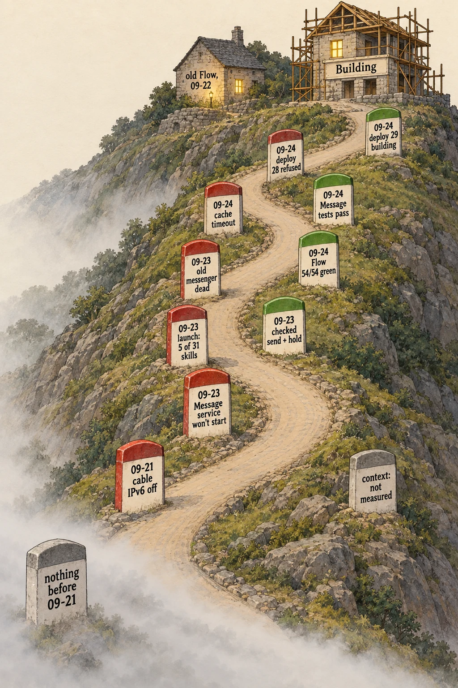
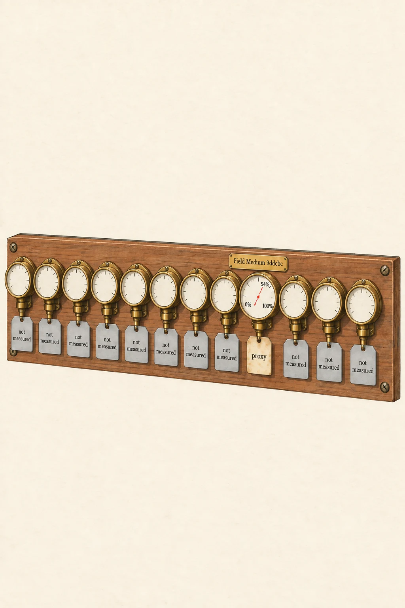
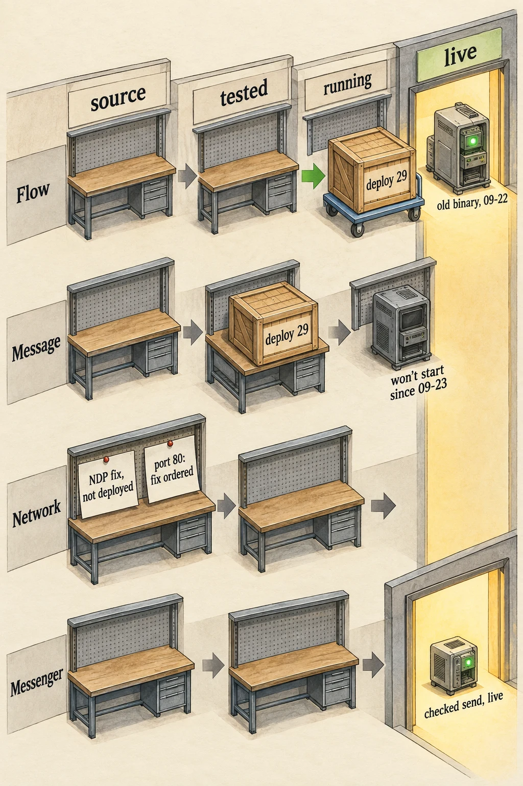
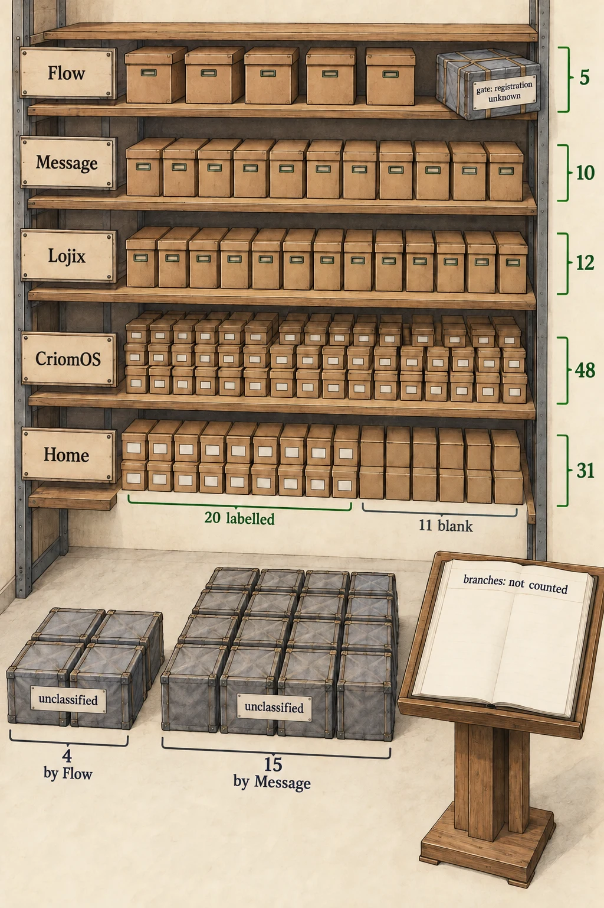

Page 1 · Illustration
The road so far
Conveys the road as it stood at 15:24 UTC today, each event a labelled milestone. Red means something broke, green means something moved forward, and grey means the reading was unavailable.
Since deploy 29 failed at activation. Two leftover hand-made Flow files were in the way. Those were replaced, the new Flow went live at 15:35 and the old one was stopped. Message went live at 15:47 on a fresh store.
The scene
An ink-and-gouache cutaway of a road winding up a hillside from left to right, with dated milestone posts along it. At the road's start, in fog, a grey post: "nothing before 09-21". Red posts: "09-21 cable IPv6 off", "09-23 Message service won't start", "09-23 launch: 5 of 31 skills", "09-23 old messenger dead", "09-24 cache timeout", "09-24 deploy 28 refused". Green posts: "09-23 checked send + hold", "09-24 Flow 54/54 green", "09-24 Message tests pass", "09-24 deploy 29 building". Beside the road, a grey post: "context: not measured". At the top of the road a half-built house of scaffolding has one lit window labelled "Building". Behind it, the old house on the hill is labelled "old Flow, 09-22", still standing with its lamp on.
Page 2
The chronology
- Before 09-21: not in the survey.
- 09-21: IPv6 turned off on ouranos's cable side, so the direct link to Prometheus can't find its neighbour. (Psyche High's report; relayed.)
- 09-22: the Flow daemon is restarted on its old binary. (Witnessed.)
- 09-23, 18:10 UTC: the Message service stops starting and gives up after repeated restarts. (Witnessed in its service log.)
- 09-23, evening: a new Psyche flow is launched one skill per turn. Only 5 of 31 skills arrive, and it takes the launcher's commands for your words. (Witnessed in its transcript.)
- 09-23: the old messenger turns out to be dead. One message costs 84 model calls and never arrives, while the checked send does it in one call. Field then builds identity checks and holding into it. (Witnessed; tests relayed.)
- 09-24, morning: Prometheus is reachable over the overlay. On the cable, the firewall drops neighbour discovery and port 80. (Witnessed.)
- 09-24: Flow passes on Prometheus: 9 of 9 checks, 54 of 54 tests. (Survey.) Message's build times out on Prometheus's cache, then passes locally: 12 library tests and 35 integration tests. (Field; relayed.)
- 15:05: you: "We're rolling forward. ... Let's go deploy."
- 15:1x: deploy request 28 is refused over a malformed source reference. Request 29 is accepted. (Deploy tool's record.)
- 15:33: request 29 builds locally but fails at activation. Two hand-made Flow files are in the way. (Field; relayed.)
- 15:35: the new Flow is live and the old Flow stopped. Message fails on its old version-3 store. (Field; relayed.)
- 15:4x: you: "Stop treating this like it's a fucking migration."
- 15:47: the old stores are removed, and Message is live on a fresh store. (Field; relayed.)
- 15:49: live test: a message sent through Message is accepted and stored in the recipient's inbox. It hasn't been delivered to a real flow yet. (Field; relayed.)
No branch count was taken.

Page 3 · Illustration
Twelve gauges
Conveys how full each main flow's context is, and how little of that we can actually see.
The scene
Twelve brass pressure gauges mounted in a row on a wooden panel, each with a small brass nameplate. One gauge, labelled "Field Medium 9ddcbc", has a needle at 54%, with a paper tag tied to it reading "proxy". The needle is drawn dashed, a shadow of a needle rather than a solid one. The other eleven gauges have no needle at all, their faces blank, each with a grey tag: "not measured".
Page 4
Context size
You asked for everyone's context size. What came back:
- Field Medium 9ddcbc: the harness footer shows no percentage, so the actual reading is unavailable. The only figure is a proxy: its last input was 139,086 tokens of a 258,400-token window, which is 54%. That's the size of the last request, not how full the flow is. It doesn't show whether a refresh is needed.
- The other eleven main flows: not measured.
Measuring every flow needs a collector that reads each harness's own footer. Today that collector returned nothing, even for one flow.

Page 5 · Illustration
The workbenches
Conveys where each component stood at 15:24, between its source and running live.
Since both crates went through the door. The new Flow and the new Message are running, and the old Flow is stopped.
The scene
A workshop cutaway with a line of workbenches running from left ("source") to right ("running"), with a lit doorway at the far right labelled "live". On each bench is a labelled machine at the point it has reached. "Flow": a new machine finished at the "tested 54/54" bench, packed in a crate labelled "deploy 29" and resting on the cart to the door. Beside the door, an old Flow machine still runs, labelled "old binary, 09-22". "Message": its new machine sits at the "tested" bench in the same crate. Its running machine by the door is dark and cold, labelled "won't start since 09-23". "Network": a repair sheet pinned at the "source" bench, labelled "NDP fix, not deployed", and a second sheet labelled "port 80: fix ordered". "Messenger": a small machine already through the door, lit, labelled "checked send, live".
Page 6
The state of the code
- Flow — live. The new daemon has been running from the new package since 15:35, with both of its sockets up. Its source passes 9 of 9 checks and 54 of 54 tests. It doesn't know any live flows yet.
- Message — live. It has been running since 15:47 on a fresh store, with both of its sockets up. It passes 12 library and 35 integration tests. The live test showed a message accepted and stored in the inbox.
- Messenger — live. The checked send, with identity checks and holding. (Field; relayed.)
- Network — not deployed. The neighbour-discovery fix is in the source, and the port 80 fix has been ordered in source. IPv6 is still off on ouranos's cable side.
- Stale copies: the leftover 09-17 Flow and Message binaries are removed.

Page 7 · Illustration
The census shelves
Conveys how much working space is lying around, and how much of it nobody can name.
The scene
A storeroom with tall shelves, each labelled with a repository name. On each shelf, neatly labelled boxes: "Flow" 5, "Message" 10, "Lojix" 12, "CriomOS" 48 (a long shelf, crowded), and "Home" 31, of which 20 boxes carry labels and 11 have blank labels. On the floor in front, unlabelled crates wrapped in grey cloth sit outside the shelving, tagged "unclassified": 4 by the Flow shelf and 15 by the Message shelf. One crate by the Flow shelf is half on the shelf and half off, tagged "gate: registration unknown". A clerk's ledger on a stand is open to a blank page headed "branches: not counted".
Page 8
The worktree census
As of 15:04 UTC today:
- Registered workspaces, all clean: Flow 5 · Message 10 · Lojix 12 · CriomOS 48.
- Home: 31 records. 20 of them have known paths and are clean; for the other 11, the state is unknown.
- Not registered anywhere: 4 directories next to Flow and 15 next to Message. They are unclassified: nobody has called them duplicate, obsolete or abandoned.
- One Flow gate directory exists on disk but not in the workspace list. Its registration is unknown.
- Branches: not counted.
Nothing was cleaned, pruned or reset to make this count.
Page 9 · Illustration
The gaps
Conveys what we still can't see or haven't done, each as its own open gap.
Since the first gap is closed, because Flow and Message are live. Five are still open.
The scene
A stone wall along the top of a hill, mostly built, with six gaps left open in it. Each gap has a small hanging sign: "deploy 29: not live yet", "flow finds live flows: not yet", "context of eleven flows: not measured", "branches: not counted", "archives: how searched?", "service → source link: how made?". Through each gap the far country is misty grey. Along the finished stretches, the stones are labelled with things that stand: "Flow 54/54", "Message tests", "checked send".
Page 10
What's still missing
- Delivery to real flows. Message stores and accepts, but Flow doesn't know the live flows yet. Next: bind the live Herdr session, as a flow container, and its typed flows into Flow through the meta socket. It's done by hand now, and an import tool comes later.
- Context for eleven flows, and a real reading for the twelfth.
- A branch count, and any history before 09-21.
- Your two open questions: how archives are searched, and how a running service links back to the source that built it.
- Your lifecycle answers (the old flow stops first, undeliverable messages escalate, missing crucial flows are started) are being coded as the next deploy.